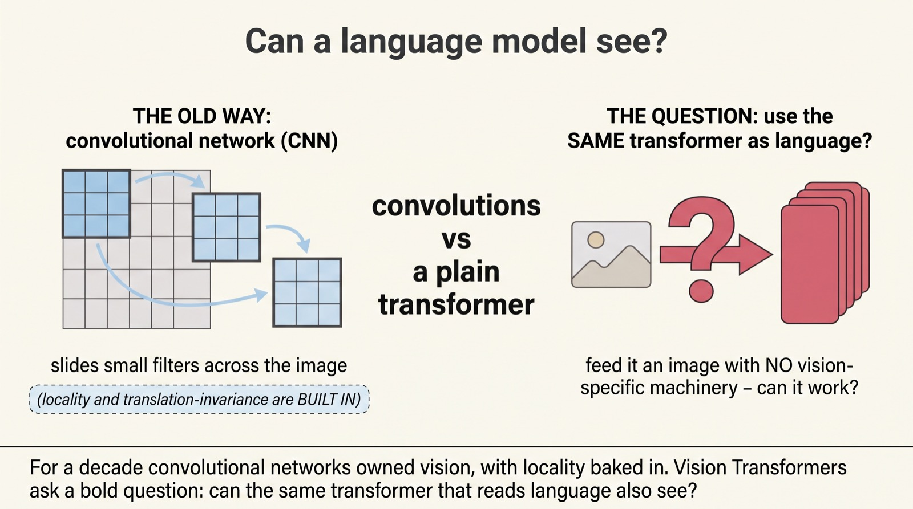
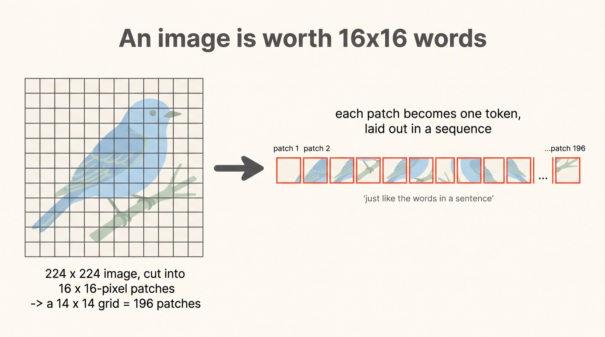
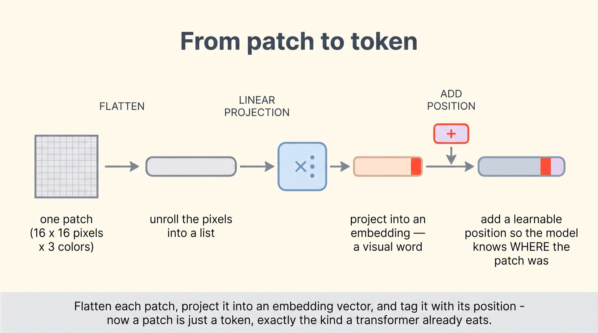
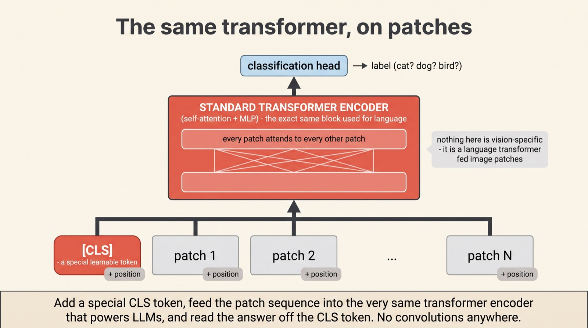
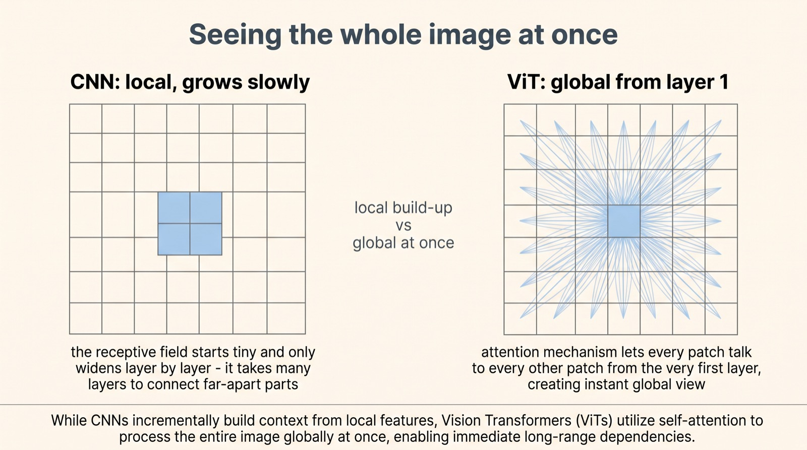
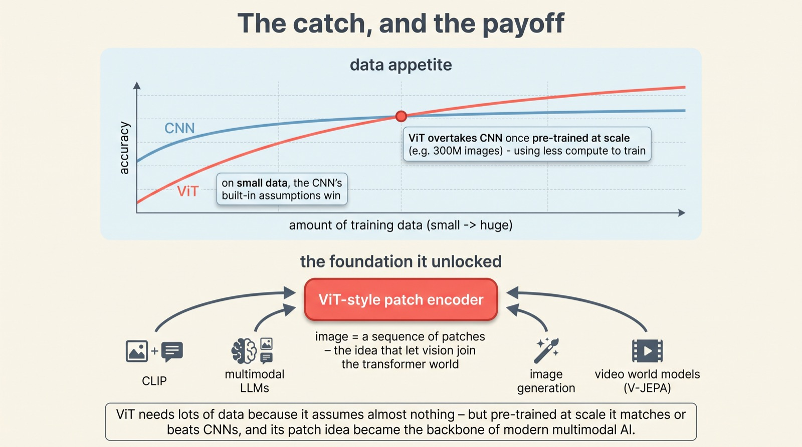

Vision Transformers: how a language model learned to see
An image is worth
16×16 words
For a decade, computer vision belonged to convolutional networks — machines built from the ground up around images. Then a 2020 paper asked a heretical question: what if we didn't build anything special for vision at all? What if we just chopped an image into little squares, called each one a "word," and fed them to the exact same transformer that reads language? It worked — and it rewired the whole field.
The Vision Transformer (Dosovitskiy et al., Google, 2020) takes an image, splits it into a grid of fixed-size patches, turns each patch into a token, and runs a plain transformer encoder — no convolutions anywhere. It needs a lot of data to shine, but once pre-trained at scale it matches or beats CNNs, and its "image = patches" idea became the backbone of nearly every multimodal model since.
Scroll to begin.
↓
Can a language model see?
For most of the deep-learning era, vision and language were separate worlds with separate machines. Language ran on transformers. Vision ran on convolutional neural networks — CNNs — which slide small learnable filters across an image, looking for edges, then textures, then shapes, building understanding up from local pieces.
CNNs work so well because they come with assumptions baked in: that nearby pixels are related (locality), and that a cat is a cat wherever it appears in the frame (translation invariance). Those assumptions are a gift on small datasets — the model doesn't have to learn them from scratch. But they're also a straitjacket. So in 2020 a group at Google asked something almost provocative: what if we throw all that away and feed an image to the plain transformer we already use for text?

It sounds like it shouldn't work. A transformer expects a sequence of tokens — words. An image is a grid of pixels. The entire trick of the Vision Transformer is a single, almost cheeky move that bridges those two things. And it's right there in the paper's title.
An image is worth 16×16 words
The paper is called "An Image is Worth 16×16 Words," and that title is the idea. Instead of processing an image pixel by pixel, you cut it into a grid of small, fixed-size squares — patches — and treat each patch as if it were a word in a sentence.
Take a standard 224×224 image and slice it into 16×16-pixel patches. You get a neat 14×14 grid — 196 patches in all. Then you simply read them out in order, left to right, top to bottom, into a single sequence: patch 1, patch 2, all the way to patch 196. An image, unrolled, now looks exactly like a sentence of tokens — and a transformer knows precisely what to do with one of those.

That reframing — an image is a sequence of patches — is the whole unlock. But a patch is still a little block of pixels, not yet a vector a transformer can consume. So there's one small conversion step to do first, for every patch.
From patch to token
A transformer eats vectors — lists of numbers of a fixed size. A patch, though, is a little 16×16 tile with three colour channels, which is really just a small pile of pixel values. Turning that pile into a proper token takes three quick steps.
First, flatten the patch — unroll its pixels into one long list of numbers. Second, run it through a linear projection — a single matrix multiply that compresses that list into a tidy embedding vector, the patch's "visual word." Third, and crucially, add a position embedding — a learnable tag that records where in the grid this patch came from. (Without it, the model would treat the image as an unordered bag of patches — the same order-blindness we met with RoPE.) Now each patch is a genuine token: a vector that knows both what it looks like and where it sat.

Do this for all 196 patches and you have a sequence of tokens indistinguishable, as far as the transformer cares, from a sentence. Which means the next step is not a new invention at all — it's the machine you already know.
The same transformer, on patches
Here's the part that still delights people: once the patches are tokens, the Vision Transformer runs the exact same transformer encoder used for language. The self-attention, the feed-forward layers, the residual connections — all of it, unchanged. There is not a single convolution in the whole model.
There's just one small addition, borrowed straight from BERT: a special learnable token, the [CLS] token, is prepended to the front of the patch sequence. As the sequence flows through the layers, every token attends to every other, and that [CLS] token acts as a kind of scribe, gathering information from all the patches. At the very top, its final vector — now a summary of the whole image — is passed to a small classification head that outputs the answer: cat, dog, bird.

Seeing the whole image at once
Running images through self-attention isn't just an elegant reuse — it changes how the model sees. And the difference from a CNN is fundamental. It's about how quickly a model can relate two things that are far apart in the picture.
A CNN starts local. In its early layers, each neuron sees only a tiny patch of the image; to connect, say, an ear in the top-left with a tail in the bottom-right, information has to travel up through many layers, its "receptive field" slowly widening. A Vision Transformer has no such patience. Through self-attention, every patch can attend to every other patch from the very first layer — the corner and the centre are one step apart. It has a global view of the image immediately.

This is a genuine strength — long-range relationships in an image are captured directly, not laboriously assembled. But that same freedom, the refusal to assume anything about images, comes at a price. And it's the catch that nearly kept Vision Transformers from working at all.
The catch, and the payoff
Because a Vision Transformer assumes almost nothing about images — no locality, no translation invariance — it has to learn all of it from scratch. And learning from scratch takes data. A lot of data. Train a ViT on a "mere" million images (ImageNet) and it actually loses to a well-tuned CNN, whose built-in assumptions give it a head start.
But keep feeding it. Pre-train the same ViT on a truly enormous dataset — hundreds of millions of images — and the picture flips. With enough examples, it learns those visual regularities better than they could ever be hand-coded, matches or exceeds the best CNNs, and does so using substantially less compute to train. The straitjacket the CNN wore for safety turns out to be a ceiling; the transformer, given enough data, climbs right past it. And the deeper payoff wasn't the accuracy at all — it was the unification. Once an image is just a sequence of tokens, vision and language speak the same language.

Why this matters
The Vision Transformer's real legacy isn't a leaderboard score. It's that it tore down the wall between two fields. Before ViT, vision and language were engineered differently, thought about differently, built by different communities. After it, an image and a sentence were the same kind of object — a sequence of tokens — and could flow through the same machinery.
That's the quiet reason so much of what came next was even possible. When a model like CLIP learns to connect pictures and captions, when a chatbot can look at a photo you send it, when a video "world model" like V-JEPA predicts what happens next — under the hood, the image is almost always being chopped into patches and fed through a Vision Transformer. The patch was the adapter that let vision plug into the transformer revolution.
So the idea to carry away is smaller and bigger than "transformers can do images." It's that a change of representation — deciding to see an image as a sentence of patches — did more than improve image classification. It let one architecture swallow the visual world, and set the stage for AI that reads, sees, and reasons across all of it at once.